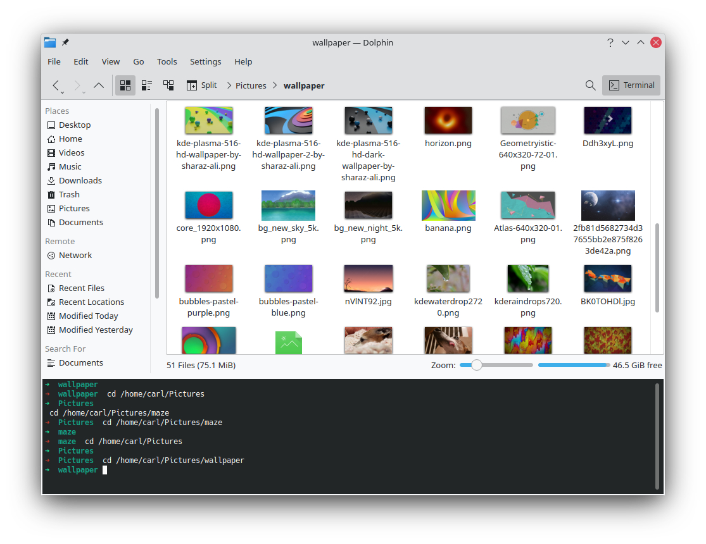

13.10 桌面环境常用软件（ArchLinux）
13.10 桌面环境常用软件（ArchLinux）
更新日期：2022/11/20
1. 概述
配置好桌面环境后，我们还需要安装一些软件来帮助我们进行日常的工作。 由于KDE中附带的图形界面工具是最多最全的，因此这里以使用KDE桌面环境为前提。
2. 系统工具
这些都是装机必备的软件。
2.1 网络连接工具
我们安装好了KDE桌面环境后，会带一个图形界面的WiFi连接工具，就不用我们敲命令行了。

2.2 蓝牙管理工具
同样，安装好KDE桌面环境后，也是会带一个图形界面的蓝牙连接工具。
除了开机启动的时候的自动连接有点小问题之外都很完美。但是需要我们自己安装bluez并设定bluetooth服务。

2.3 浏览器
推荐使用FireFox。（Edge和Chrome也已经支持Linux）
2.4 资源管理器
使用dolphin几乎是唯一的选择，其他的感觉嗯，实在是太丑了。

3. 文本编辑器
首先是leafpad，这是一个仿Windows记事本的非常轻量级的文本编辑器，功能几乎一模一样，启动速度极快，占用资源极少。而且界面经过升级之后也能融入系统主题，不丑了。

再复杂一点的是KDE自带的Kate，功能更多，启动速度要稍慢一点，支持语法高亮显示。
最后就是Visual Studio Code，宇宙级文本编辑器，有了这个几乎所有的文本编辑任务都没有问题了。而且它的启动速度也不会很慢，在低配的计算机上也能表现的很出色。
由于我们需要经常使用控制台，所以Vim也是必不可少的。 然后控制台中还需要一个差分比较工具，可以选择使用diffuse。
4. 绘图、画画、图片处理工具
选择不是很多，很多软件都没有Linux版本。
首先是访Windows画图程序的软件KolourPaint。

复杂一点的任务，可以使用GIMP，功能非常强大，完全够用了。

5. 音乐与多媒体
使用浏览器就可以了。本地播放器现在几乎没什么使用场景了。
6. 办公软件
自从微软完善了Web版Office，浏览器可以胜任一部分任务了。但是对于稍微复杂一点的作业，在网页上操作还是非常的难受，因此桌面端软件仍然非常的必要。
6.1 邮件
如果不想使用浏览器的话，ThunderBird雷鸟是最好的选择，而且它现在是跨平台的，也支持Windows、MacOS了。界面上也有了非常大的改观。
6.2 office
可以使用LibreOffice和WPS，但是它们都没有微软的Office那么强大。
我比较喜欢LibreOffice，微软的软件比较臃肿，各种软件容易绑定在一起。而LibreOffice比较小巧，并且是完全免费的。

7. RSS订阅
还是浏览器搞定，比如FireFox中的插件。
8. 游戏
在Linux中玩游戏不是一个好的选择，但是通过使用Lutris游戏平台，确实能够玩一些游戏。 比如暴雪战网中的星际争霸2就可以玩。